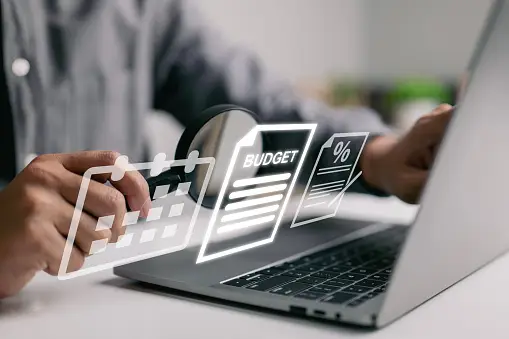

About Us
Welcome to Expense Tracker, your trusted companion in managing your expenses effortlessly. At Expense Tracker, we understand the importance of keeping track of your expenses and managing your finances effectively. With our user-friendly platform, we strive to simplify the process of expense tracking, helping you gain better control over your finances and achieve your financial goals.
Our Mission
Our mission is to empower individuals and businesses to make smarter financial decisions by providing them with powerful yet easy-to-use tools for expense management.
Key Features
==>Effortless Expense Tracking: Easily record and categorize your expenses in real-time, whether you're on the go or at your desk.
==>Comprehensive Reports: Gain valuable insights into your spending habits with detailed reports and visualizations, helping you identify areas where you can save and optimize your budget.
==>Customizable Categories: Tailor your expense categories to suit your unique financial needs, ensuring accurate tracking and analysis.
==>Easy to use: It is very easy to use. User just have to add what he spends for and how many user spends for in which date.
==>Download Expenses in Excel: Seamlessly export your expense data to an Excel sheet with just a few clicks, making it easy to integrate with your existing financial tools and workflows.

